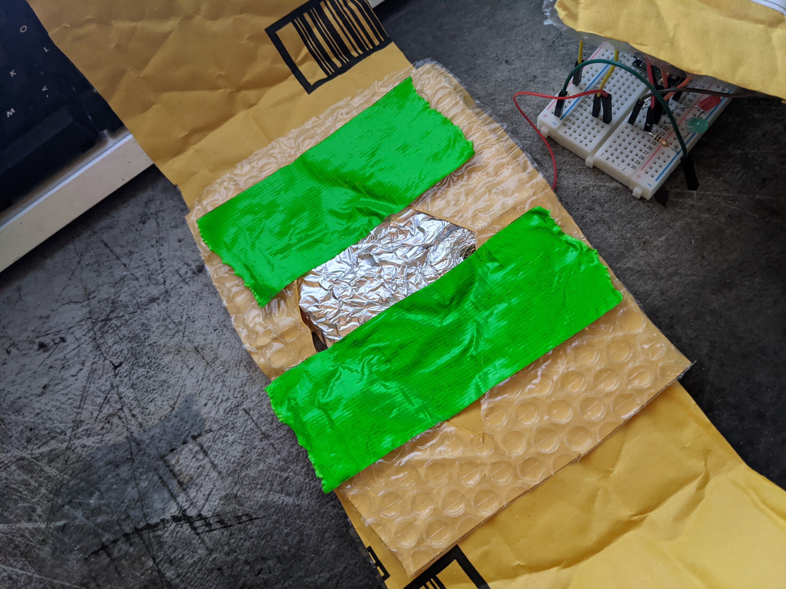
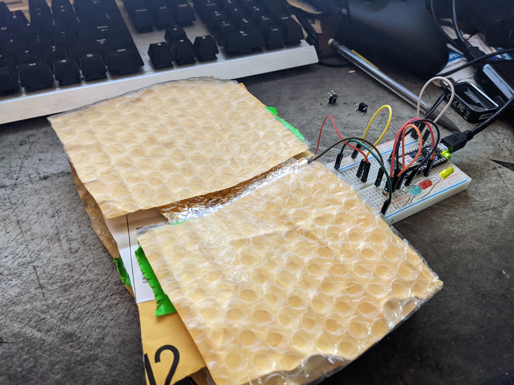
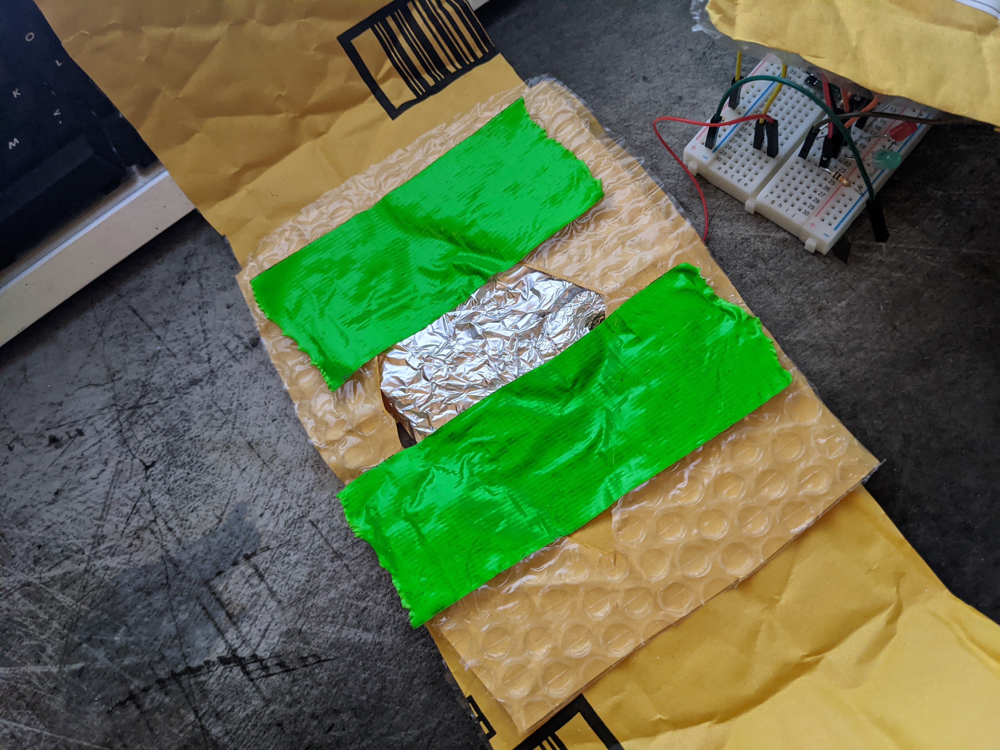
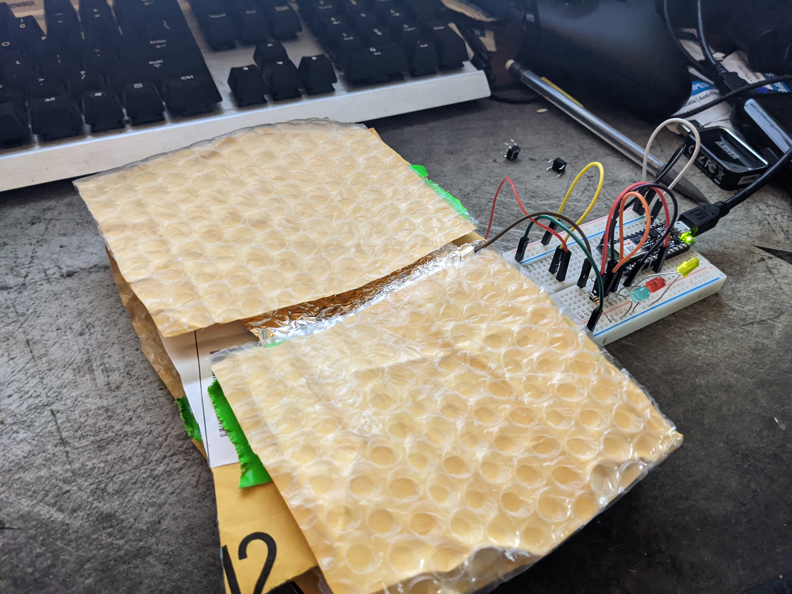

Creative Coding Week 9
 Next I wanted to try out some sort of springy setup for a pad like what was talked about in class.

For that I used a package with bubble wrap built in, and layered it with some cutouts for the aluminum to touch.

Worked out pretty well, I think I just need some longer wires and some bigger LEDs to really alarm someone, maybe some
loud noises to just to really enforce that good posture.
Next I wanted to try out some sort of springy setup for a pad like what was talked about in class.

For that I used a package with bubble wrap built in, and layered it with some cutouts for the aluminum to touch.

Worked out pretty well, I think I just need some longer wires and some bigger LEDs to really alarm someone, maybe some
loud noises to just to really enforce that good posture.

 I was thinking this would work pretty well for when someone is feel a little sleepy during those long webcam meetings.
I was thinking this would work pretty well for when someone is feel a little sleepy during those long webcam meetings.

home
while (!deck.isInOrder()) {
print 'Iteration ' + i;
deck.shuffle();
i++;
}
print 'It took ' + i + ' iterations to sort the deck.';